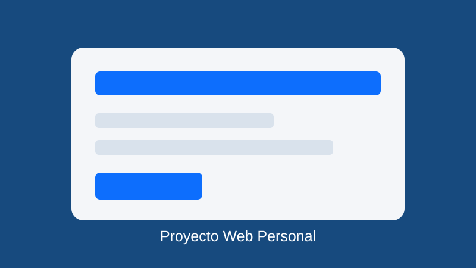
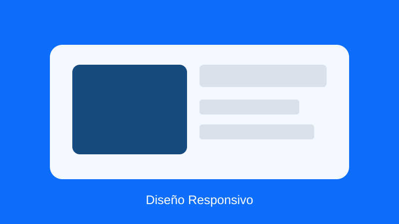

Página Web Personal
Este proyecto consiste en la creación de una página web personal utilizando HTML5 y CSS. Se trabajó la estructura de la página, los colores, los espacios y la organización del contenido.
El objetivo fue aprender a construir una página sencilla y organizada utilizando una estructura HTML5 adecuada.
Volver al portafolio
Interfaz Responsiva
En este proyecto se desarrolló una interfaz capaz de adaptarse a diferentes tamaños de pantalla. Se utilizaron filas, columnas y clases responsivas para mejorar la visualización.
El objetivo fue comprender la importancia del diseño responsivo para usuarios que utilizan computadores, tabletas y teléfonos celulares.
Volver al portafolioSitio con Bootstrap
Este proyecto utiliza Bootstrap 5 para crear componentes visuales como barras de navegación, botones, tarjetas y diferentes elementos de diseño.
Bootstrap permite desarrollar interfaces de forma más rápida utilizando clases prediseñadas y herramientas para crear sitios responsivos.
Volver al portafolio